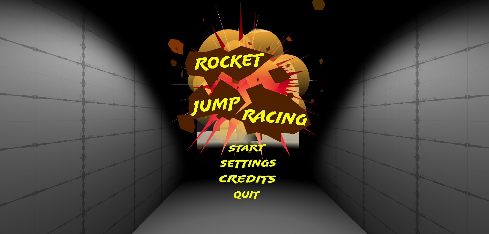

Rocket Jump Racing
Team size: 5 people
Platform: PC
Engine: Unity/MLAPI
My role: Programmer
About the project
Rocket Jump Racing was my senior capstone project at NHTI Community College. The game runs on Unity and uses MLAPI as the networking service to handle the multiplayer. I was apart of a group of 5 that developed the game. The game is based around the classic game mechanic of rocket jumping / rocket boosting. Players must race around a track using rocket jumping as their main means of movement. The game features multiple playable characters to choose from, each with their own unique abilities and features. Original concepts included things such as powerups and character based special abilities, although these features were ultimately cut due to time constraints. An additional gamemode based around hot potato was also originally planned to accompany the racing gamemode, although this was also ultimately cut.

The technical aspects
My main role on the team was that of a programmer, although I also did a bit of UI design aswell. Early in development I worked on and designed the main in-game player UI, as well as some of the functionality for it. After that, most of my time was spent designing and programming the networking between the clients and server for multiple game systems, most notably the race logic and lobby system. Apart of the race logic was tracking players positions amongst themselves, as well as determining when a player has won the race. I did a bit of design on the main menu, and programmed the character selection system, as well as the logic behind hosting servers and connecting to servers as a client.
View This Projects Github